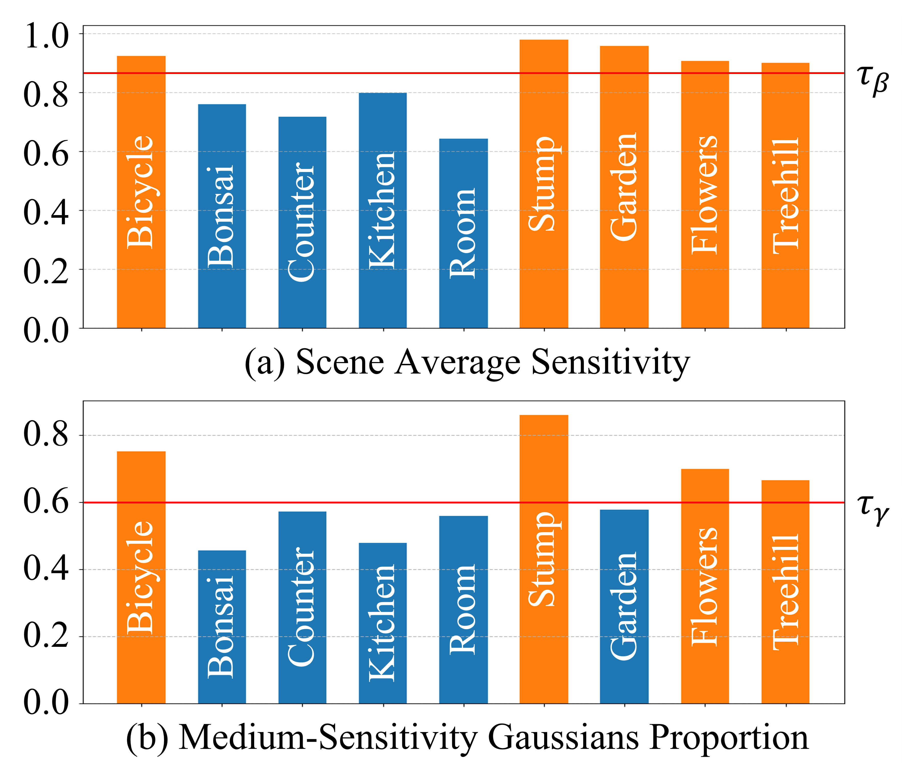

Figure 1. Qualitative comparison of our method combined with CoR-GS.Figure 2. Qualitative comparison of our method combined with 3DGS.Figure 3. Qualitative comparison of our method combined with Pixel-GS.Figure 4. Qualitative comparison in non-sensitive regions.Figure 5. The impact of the sensitivity map on the distribution of Gaussian primitives across different regions.Figure 6. Visualization of rendered depth.Figure 7. Visualization of the rendered sensitivity map during training.

Figure 8. Hyperparameter setting based on statistical analysis.